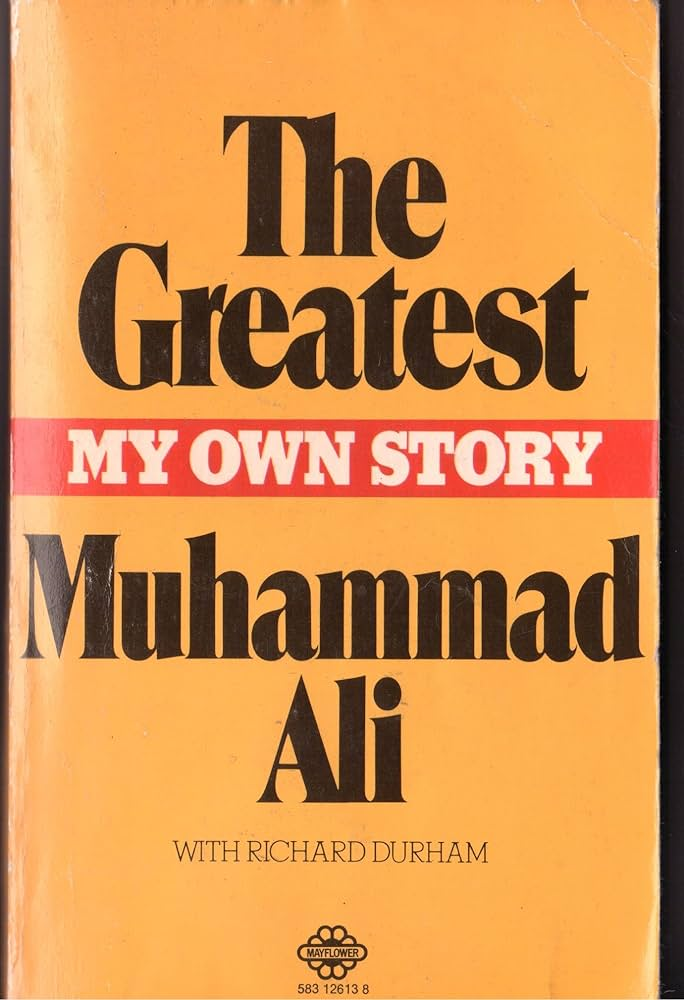
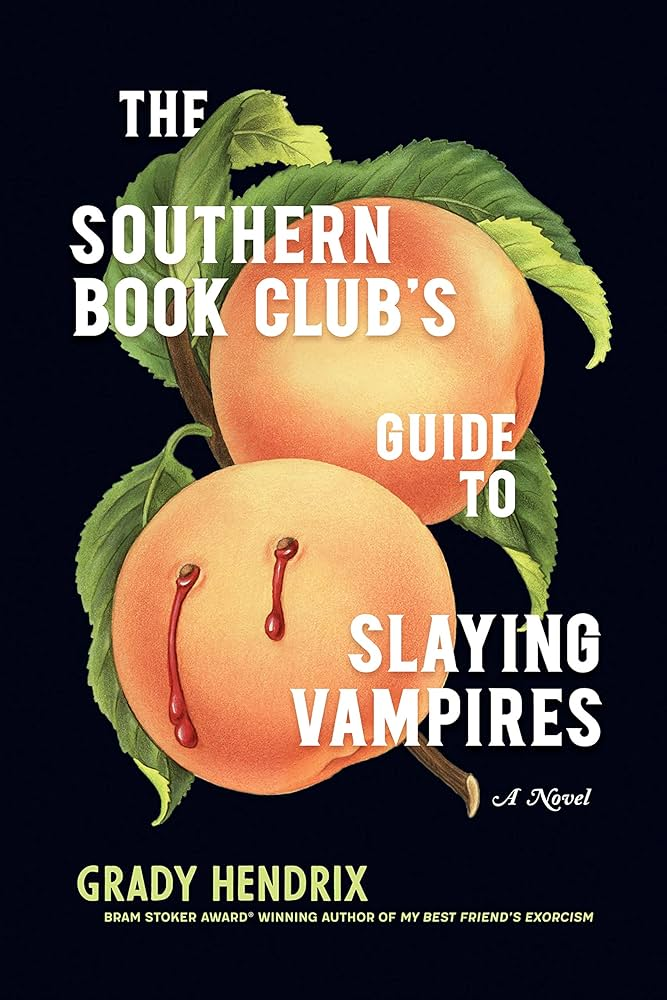

Last Summer I went to Italy with my cousins, and it was the adventure of a lifetime. The sights, food, and people were all wonderful and it was truly an experience I would love to have again. Travel in Italy was very straight-forward, and I definitely got all my steps in each day we were there.
My favorite restaurant is Agora in Washington D.C. This restaurant is not too far from me and is always a great choice for any meal, brunch, lunch, dinner, you name it. Their spreads are delicious and the ambience is cozy but luxurious at the same time. I have never been disappointed with this restaurant- and I don't think I will be in the future.
Despite a Mediterranean restaurant being my favorite, my favorite dish to eat is actually Panang Curry (pictured on the left). It is a Thai curry that is loaded with vegetables and has a bit of a kick. It is traditionally eaten with white rice, but I actually prefer to eat it with wide rice noodles.
| BOOK | COVER | AUTHOR | SUMMARY |
|---|---|---|---|
| It Ends With Us | |
Colleen Hoover | After her abusive father dies, Lily Bloom decides to follow her dream and open a flower shop. With the help of her new assistant, Allysa, the store project gets up and moving quickly, but Lily soon finds out that Allysa's brother, Ryle, is someone she met a year before and never forgot. As the story unfolds, we see Lily fall in love, encounter others from her past, and navigate unforseen challenges. |
| Elements | A Priest of the Oriental Church | Elijah is a first generation Egyptian-Canadian boy who feels out of touch with his parents religion and culture. We follow him on his journey to learning about himself and forging a relationship with God. | |
| The Greatest: Muhammad Ali |  | Walter Dean Myers | A biography about the greatest boxer of all time. This book celebrates his childhood and career while also shining a light on the dangers of boxing. |
| The Southern Book Club's Guide To Slaying Vampires |  | Grady Hendrix | Patricia Campbell feels like life is passing her by now that her kids are teenagers and her husband has been busy at work. The only thing keeping her entertained is her book club and her relationships with the women in the book club. That is until there is a newcomer in town. Patricia becomes intrigued with the mystery surrounding this man and it may cost her her life. |